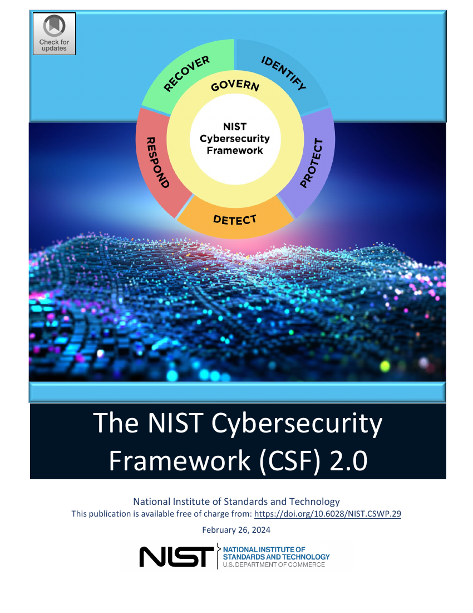
المعرفةُ تتكلَّم العربية
نُترجم كتب العالم المهمة — في الفلسفة والاقتصاد والطب والبرمجة وغيرها — ترجمةً كاملة لا ملخّصات، وننشرها للجميع مجانًا. مهمتنا: مضاعفة حصة اللغة العربية من محتوى الإنترنت.
كل الكتب من الملك العام أو بتراخيص مفتوحة — قانونيًا آمنة للترجمة والنشر، وبأغلفة حقيقية.
١٩
كتابًا مترجمًا بالكامل
493.1 ألف
كلمة عربية منشورة
٩
مجالات معرفية
٪١٠٠
ترجمة كاملة — صفر ملخصات
المكتبة
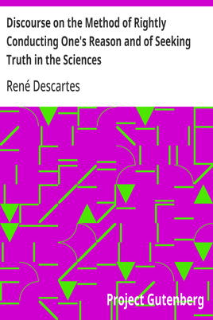
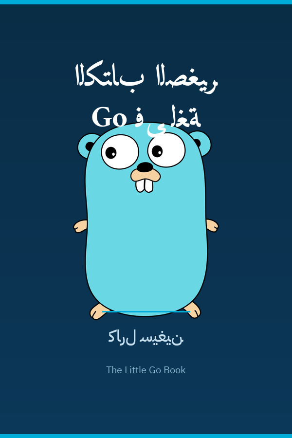
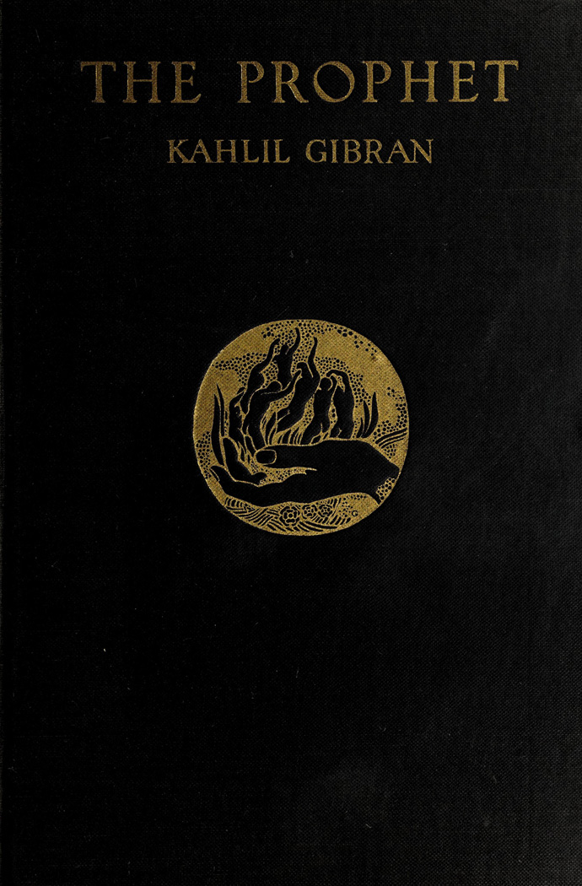
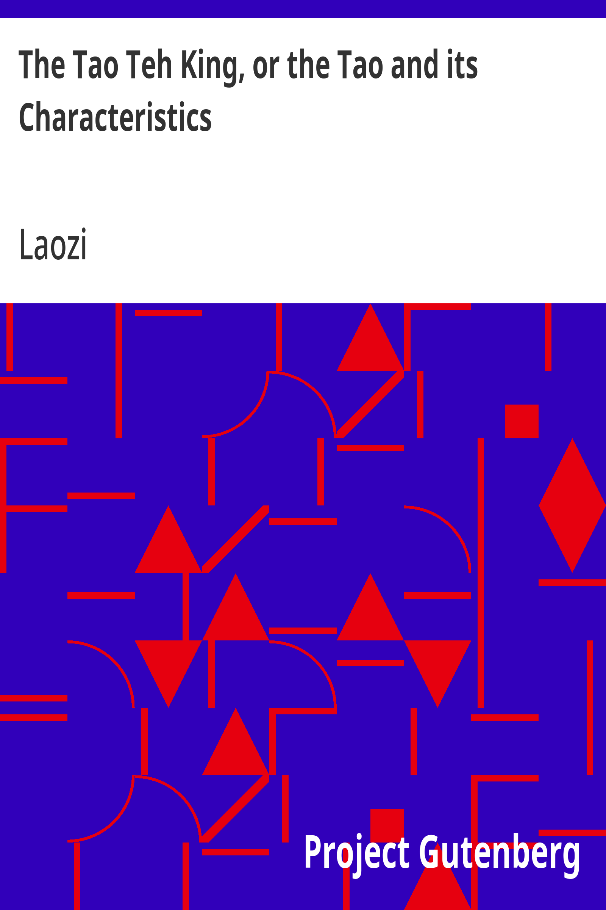
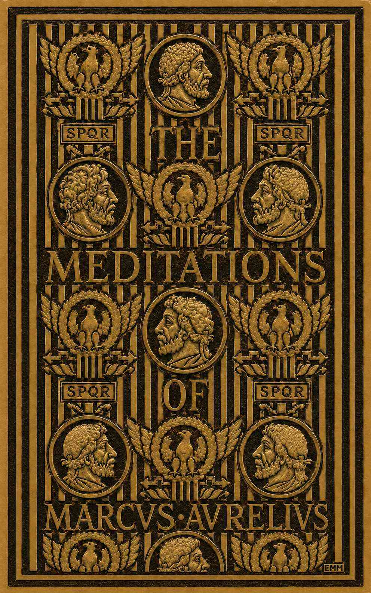
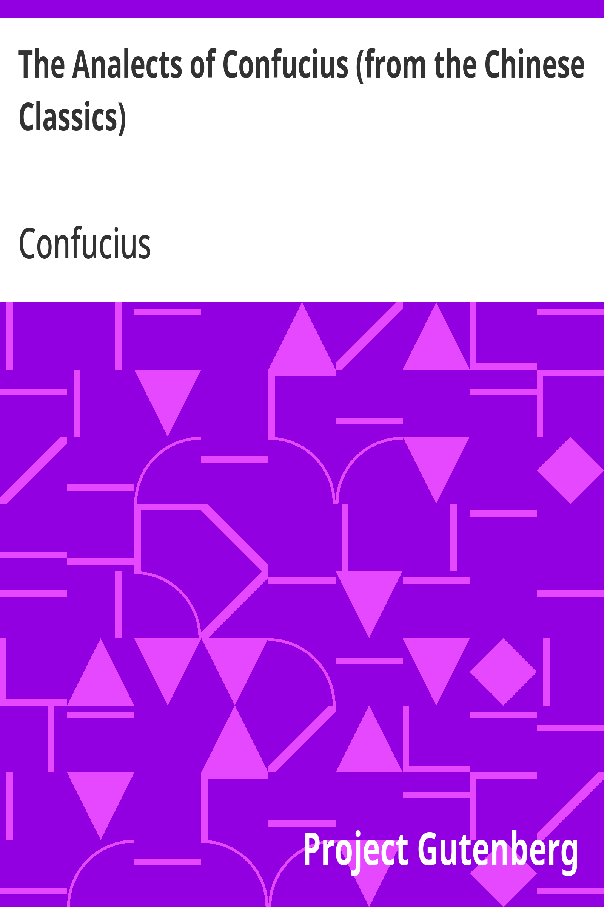
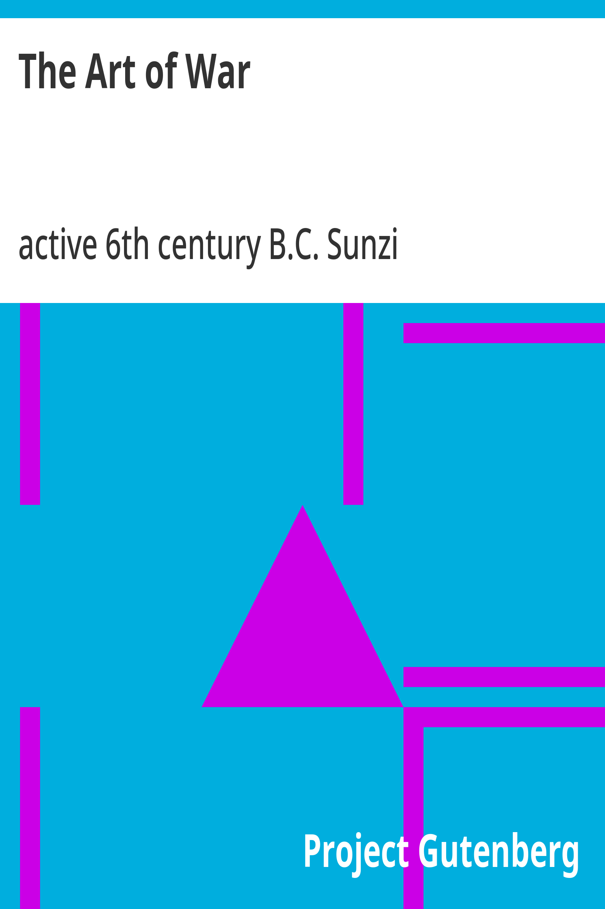
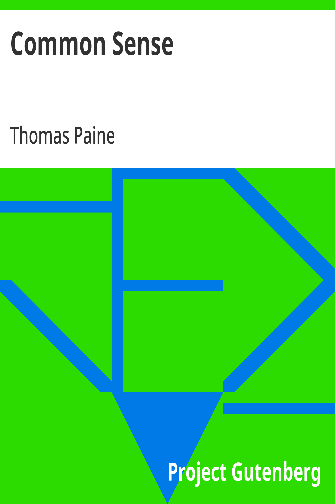
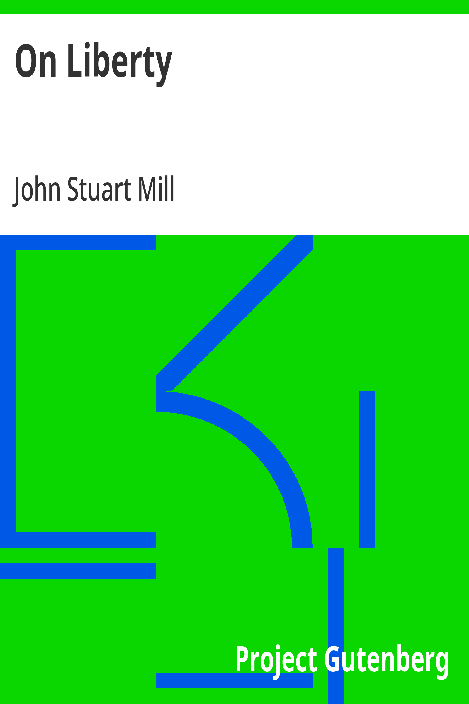
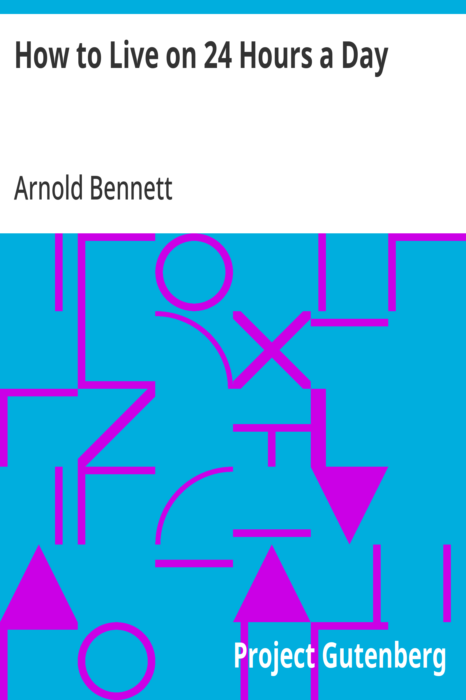
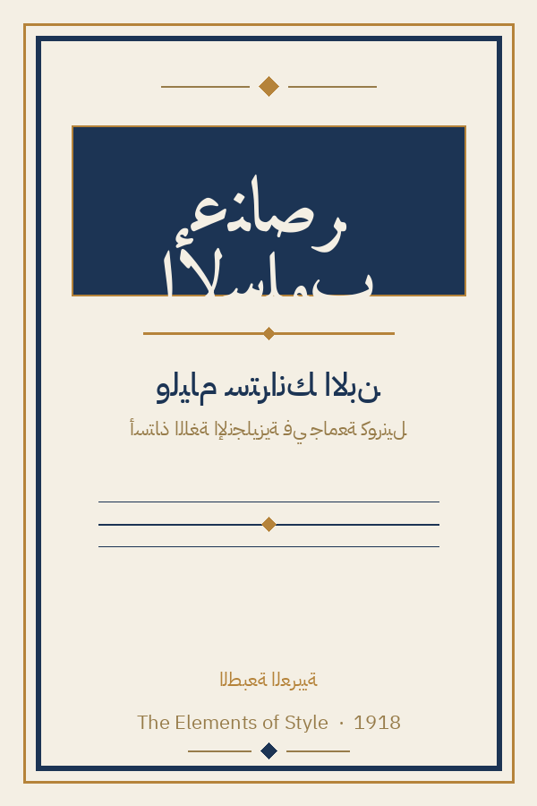
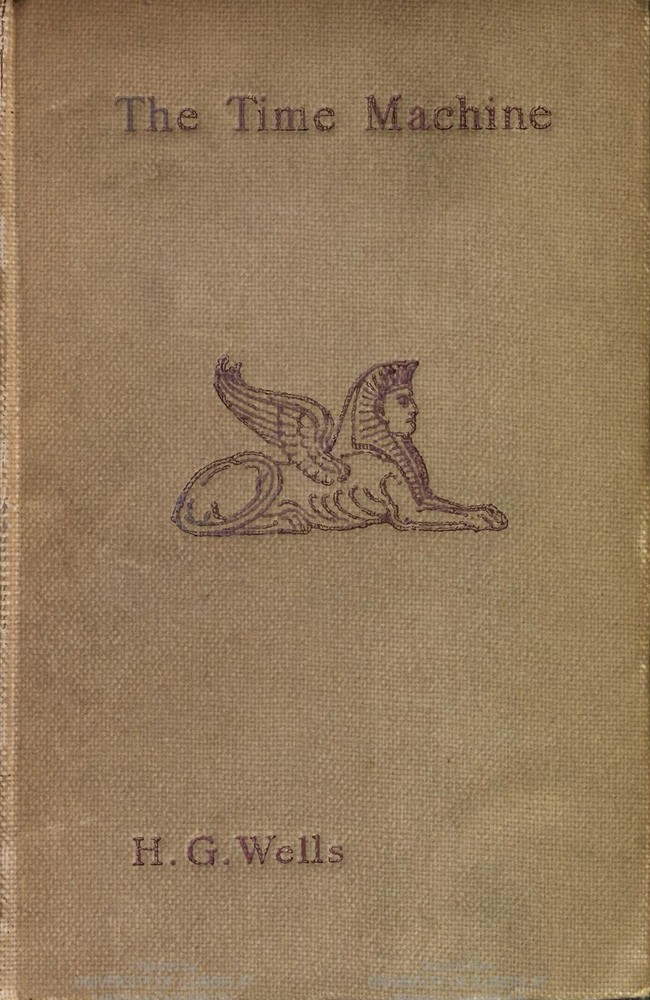
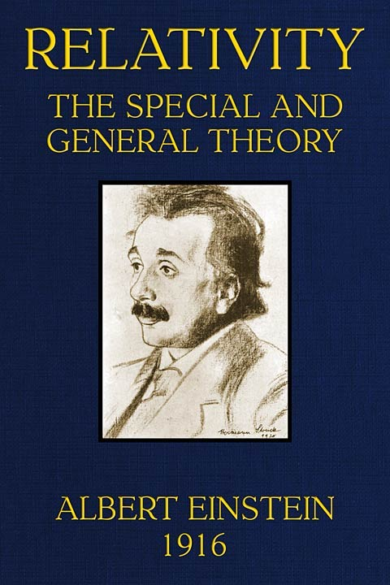
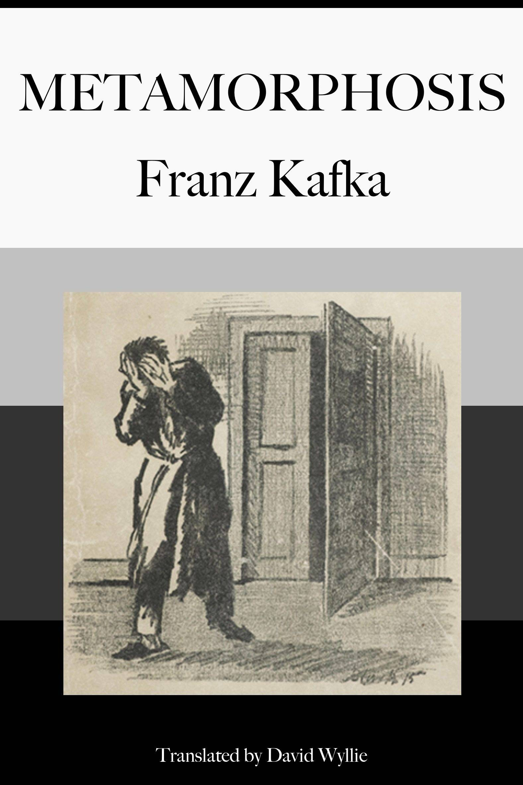
لا توجد نتائج مطابقة… جرّب كلمةً أخرى.